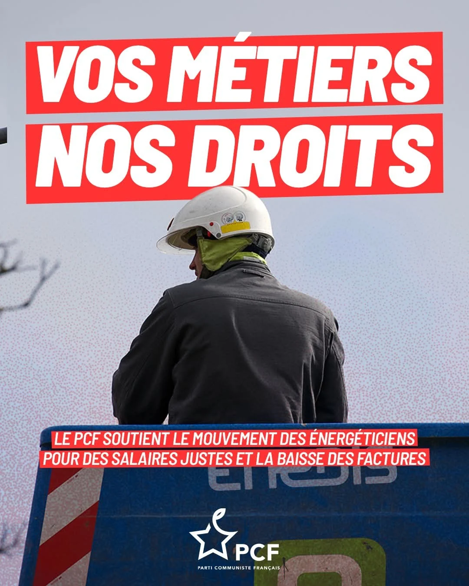

Déclaration nationale
Énergie. Le PCF soutient les grévistes de Mines-Énergie
Date indiquée par Facebook · 2 septembre 2025
Repères éditoriaux
Le PCF a soutenu la grève du 2 septembre 2025 à l’appel de la fédération Mines-Énergie de la CGT. Pour les salariés, il défend une hausse des salaires. Pour les usagers, il propose une baisse de la TVA sur le gaz et l’électricité et un grand service public de l’énergie.
Texte conservé avec la publication
Le PCF apporte son soutien aux énergéticiens en grève !
Aujourd’hui, à l’appel de la fédération Mines-Énergie de la CGT, plus de 200 sites sont en grève. Nous saluons cette mobilisation forte des énergéticien·nes qui revendiquent simplement le droit de vivre dignement de leur travail par une hausse des salaires - trois échelons de la grille des salaires sont sous le niveau du SMIC - et un juste prix pour les usagers du service public de l’énergie par la baisse des factures de gaz et d’électricité.
L’énergie est un droit pour tous et toutes et un besoin vital pour la société. Pour le garantir, l’heure est à la construction d’un grand service public de l’énergie autour d’EDF et Engie renationalisées !
Le PCF propose de baisser la TVA à 5,5% sur les factures de gaz et d’électricité, de sortir du marché européen spéculatif de l’énergie et de développer le service public pour répondre aux besoins et décarboner la production et la consommation énergétiques.
Il est temps de remettre l’intérêt général au cœur de la politique énergétique, avec un pilotage démocratique de tous les acteurs concernés, un service public puissant et des investissements massifs, la création de centaines de milliers d’emplois et les formations associées pour garantir à tous un accès à une énergie propre, abordable et sécurisée.
L’orientation stratégique de la politique de l’énergie doit être fondée sur la constitution d’un mix énergétique 100 % public et 100 % décarboné, s’appuyant sur le nucléaire, atout majeur de la France, l'hydroélectricité et sur le développement des énergies renouvelables.
Paris, le 2 septembre 2025
Parti communiste français.

Sources
Archive rouge · export Facebook · AR-0002-FB-01030
À lire aussi · Le PCF défend une baisse de la facture d’électricité